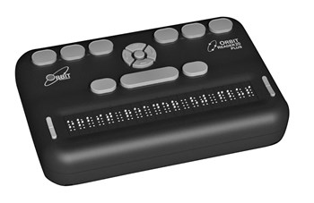
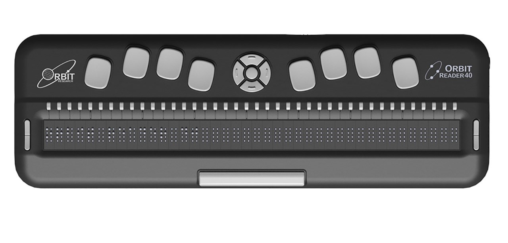

orbitreader2 web font
If you are still sighted, and want to learn braille through immersion, then you should set a terminal to use this font; and think about getting an actual Orbit Reader that matches this font (and includes chars that don't ever show up on your display for other reasons). This font greatly improves legibility by including a marker just under the standard 6-dot braille, where 8-dot capitalization mark may show below the line. Most braille fonts that show outlines are terribly illegible because they try to show where all of the dots are. You really just need an uncluttered hint as to where each braille cell is located; something that you have some sense of on a real braille display (but not on paper).
You will quickly learn all of the punctuation this way. This font is exactly what is going to be on your display when in computer braille mode.
If you are a computer programmer, this is far easier than learning uncontracted braille. All of your tooling will work correctly when braille is "just a font", rather than a transform to a language that has difficulties that break tooling that do not anticipate braille use. This is a fixed-width font as far as your computer is concerned.
As an example, you may want to use a command-line tool for doing mathematics, such as Maxima, that does computer algebra. You may want to use a common text editor such as Vim. You will learn very quickly by typing on a QWERTY keyboard, while getting 8-dot braille feedback.
The Orbit Reader braille displays are quite cheap compared to other vendors. But they do not ship with a set of fonts that map the display.
A 20 char display is $600 new. You can add about $100 to get on-board UEB translation.

A 40 char display is about $1400, and it comes with on-board UEB translation.

They default to an ASCII 8-dot braile, which the program brascii has gotten the logic for translating from 6-dot ASCII braille translated into its actual 8-dot form.
It also fills in the gaps that tables in the documents don't fill in for you.
It tells you what every byte value from 0 to 255 should be, so that the table is complete.
This is a good font for dealing with code.